Training Diffusion Models on MNIST
In this part, I built a simple one-step denoiser using a UNet architecture. The goal was to train a model that can denoise images corrupted with Gaussian noise.
The denoising objective is: L = Ez,x ||Dθ(z) - x||²
Where z = x + σε with ε ~ N(0, I)
I implemented a UNet with the following components:
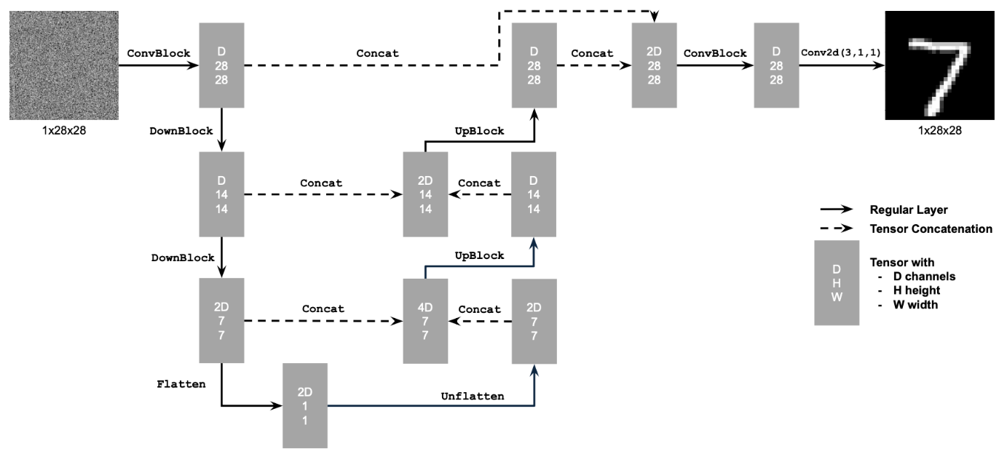
Unconditional Unet Architecture
Visualization of the noising process with σ = [0.0, 0.2, 0.4, 0.5, 0.6, 0.8, 1.0]
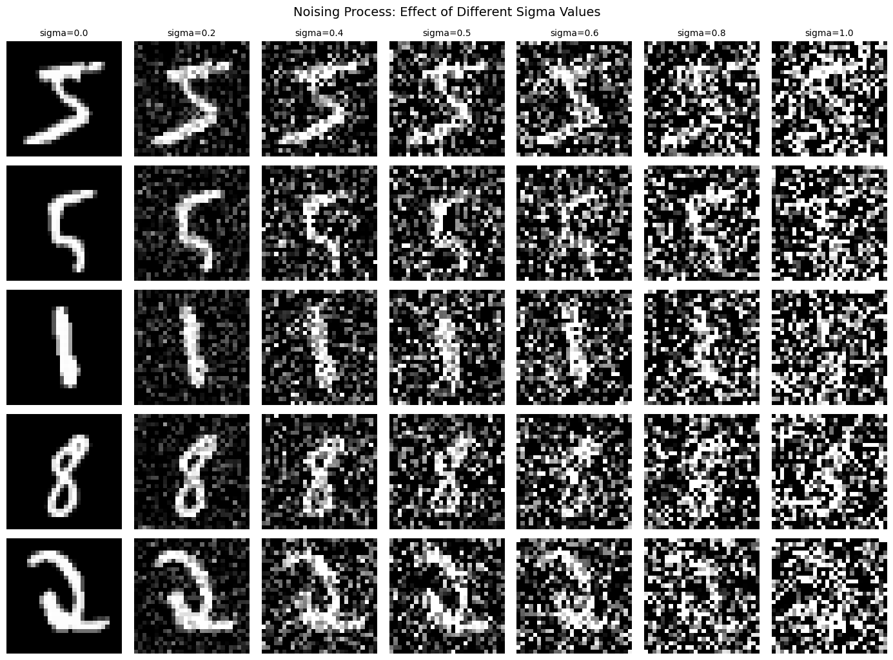
Figure 1.2: Images with increasing noise levels
Training Setup:
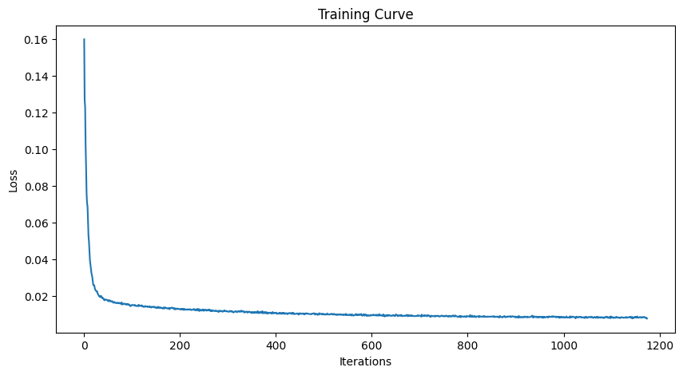
Figure 1.2.1a: Training loss over iterations for σ = 0.5
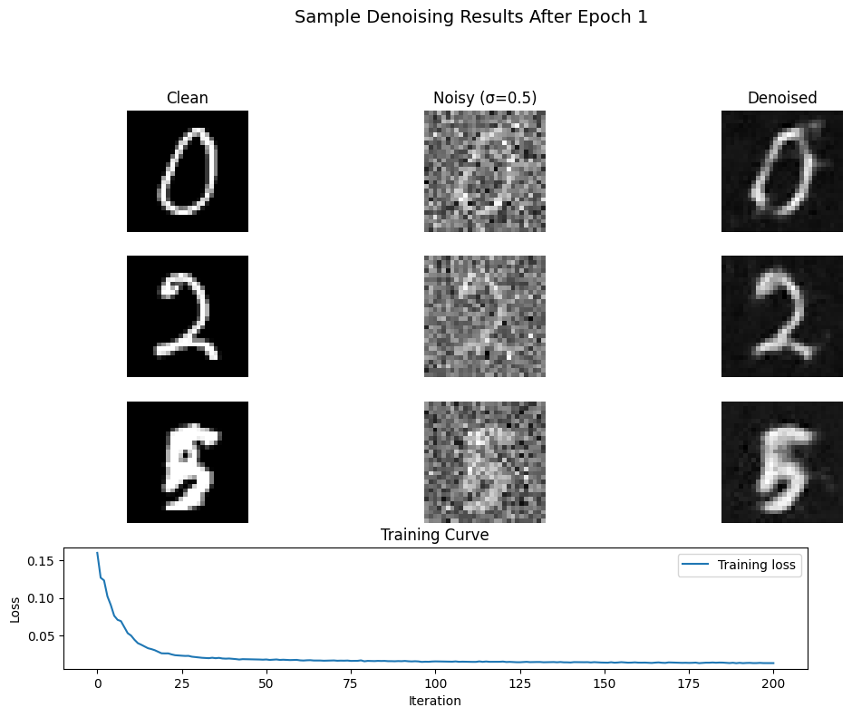
Figure 1.2.1b: Denoising results after 1 epoch
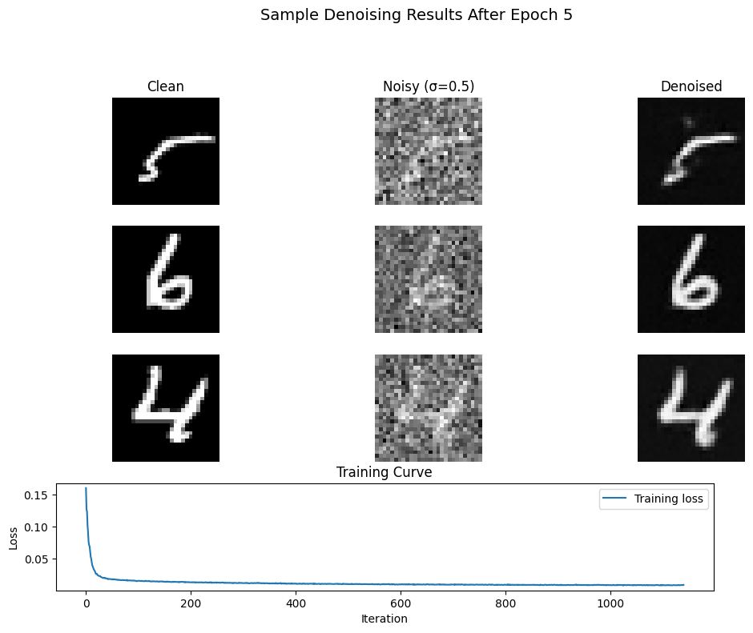
Figure 1.2.1c: Denoising results after 5 epochs of training
Testing the denoiser (trained on σ = 0.5) on different noise levels to evaluate generalization.
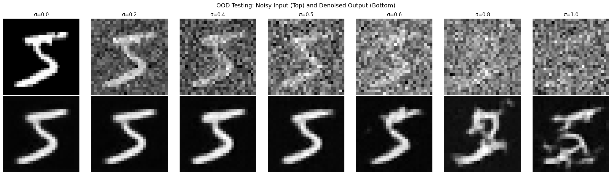
Figure 1.2.2: Out-of-distribution results with varying σ values
I trained the denoiser to denoise pure Gaussian noise (ε ~ N(0, I)) into recognizable digits.
Observations: When the denoiser is trained to map pure Gaussian noise to clean MNIST images, the input contains no information about which digit the model should produce. Under an MSE loss, the optimal solution is the output that minimizes the squared distance to all training images simultaneously. This is the pixelwise average (centroid) of the dataset. As a result, the model quickly collapses to generating the same blurry, prototype-like digit regardless of the noise input: initially just faint blobs, and after more training, a smooth blend of common MNIST shapes (resembling a fuzzy 0, 3, or 8). These outputs do not represent true samples but rather the dataset’s mean, reflecting the fact that without conditioning, denoising becomes a regression-to-the-average problem rather than a generative one. We see this in the training curve plot: training loss doesn’t improve over iterations, and it fluctuates about the pixel wise avg prediction. The denoised images don’t move closer to the original digits over training epochs, the only noticeable difference is that the predictions are slightly less pixelated in epoch 5 compared to epoch 1.
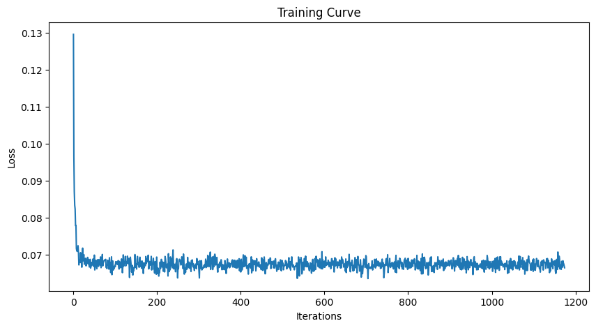
Figure 1.2.3a: Training loss for denoising pure noise
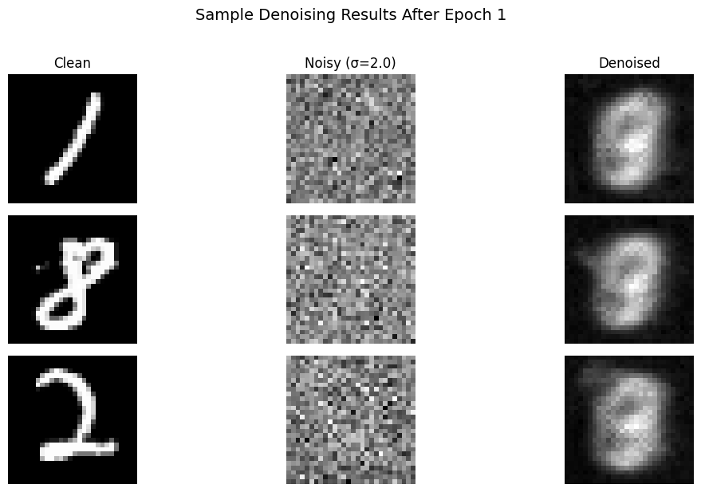
Figure 1.2.3b: Pure noise denoising after 1 epoch
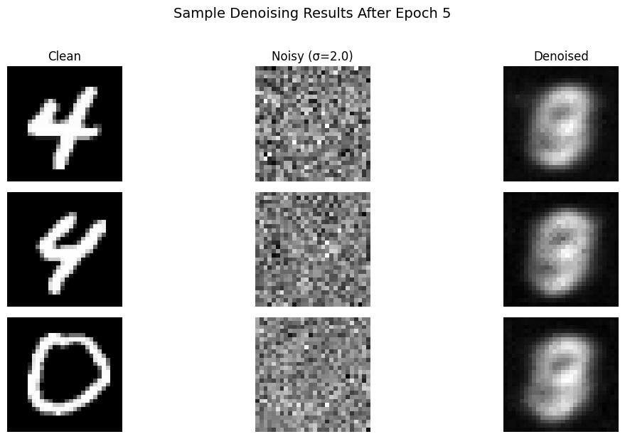
Figure 1.2.3c: Pure noise denoising after 5 epochs - note the blurry, averaged appearance
Flow matching enables iterative denoising by learning the velocity field from noise to clean data.
I defined: xt = (1-t)x0 + tx1 where x0 ~ N(0,I) and x1 is clean data
The flow (velocity) is: u(xt, t) = dxt/dt = x1 - x0
Training objective: L = E ||( x1 - x0) - uθ(xt, t)||²
I extended the UNet to be conditioned on timestep t using FCBlocks (Fully-Connected Blocks):
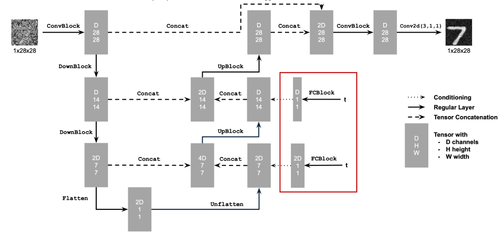
Time Conditioned Unet Architecture
Training Setup:
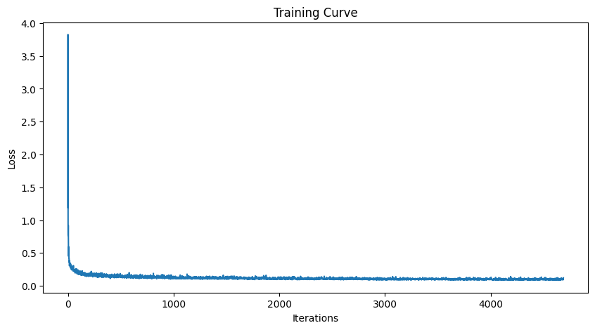
Figure 2.2: Training loss for time-conditioned UNet
I used iterative denoising using Euler's method with step size Δt. Starting from pure noise, I iteratively predicted and followed the flow to generate clean digits. Notice that even by Epoch 10, it's still difficult to recognise the images as digits.
The time-conditioned UNet struggles to produce recognizable digits because it lacks explicit control over which digit to generate. In flow matching, the model learns a single velocity field that must handle all possible paths from noise to any digit in the dataset. Without class conditioning, when sampling from a random initial noise point, the model doesn't know which of the ten digit classes to flow toward, so the predicted velocity field often points toward an average or interpolated direction between multiple digit modes. This results in the flow trajectory landing in ambiguous regions of the data manifold, producing blurry or inconsistent digits.
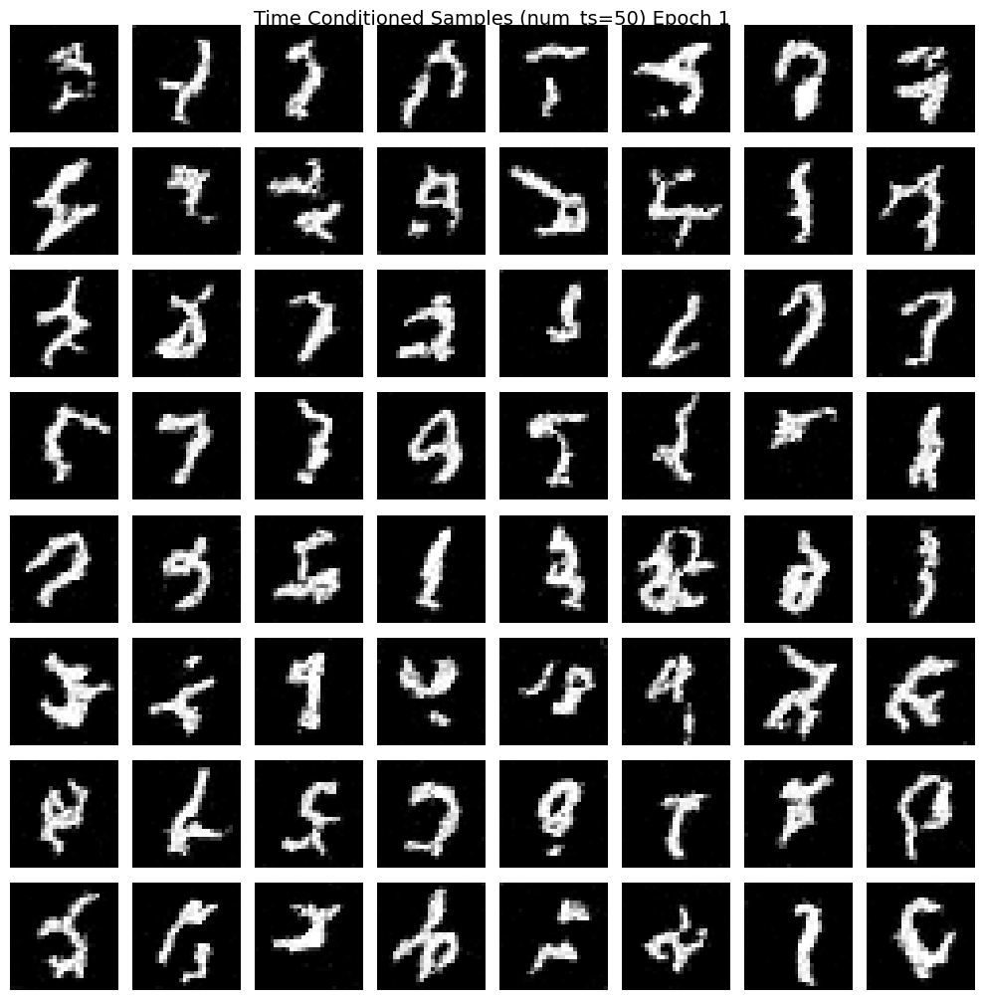
Figure 2.3a: Sampling results after 1 epoch
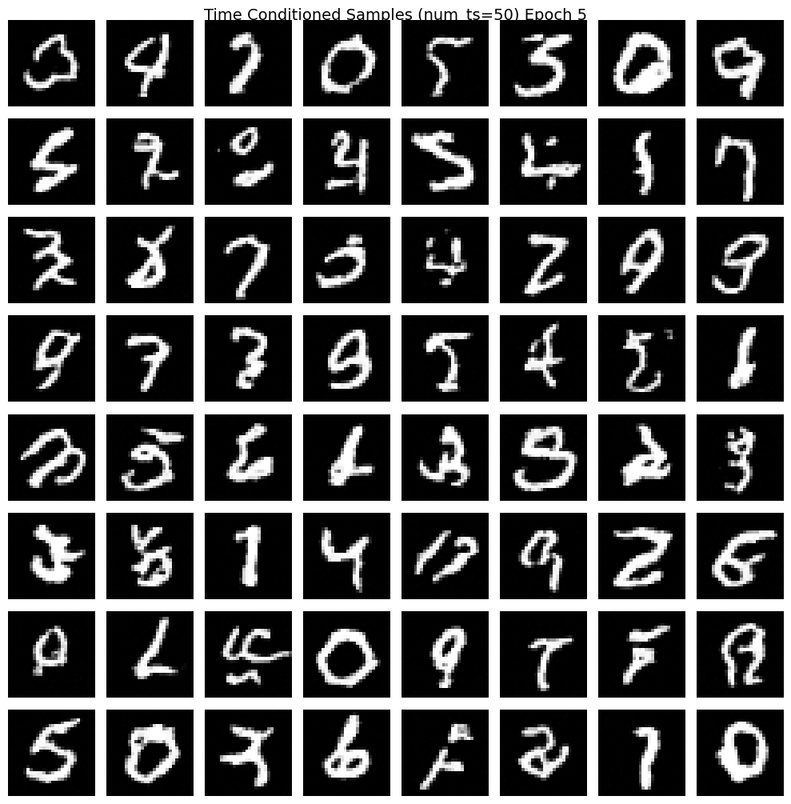
Figure 2.3b: Sampling results after 5 epochs
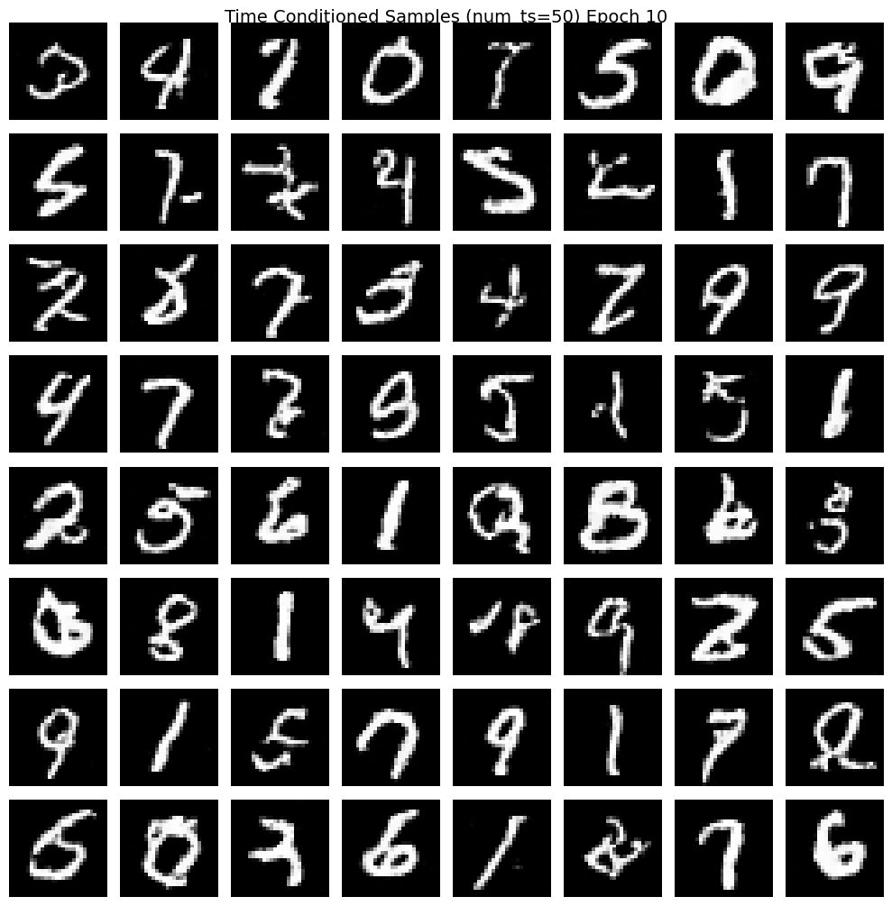
Figure 2.3c: Sampling results after 10 epochs
I added class conditioning to control which digit (0-9) to generate:
unflatten = c1 * unflatten + t1 and up1 = c2 * up1 + t2Training Setup:
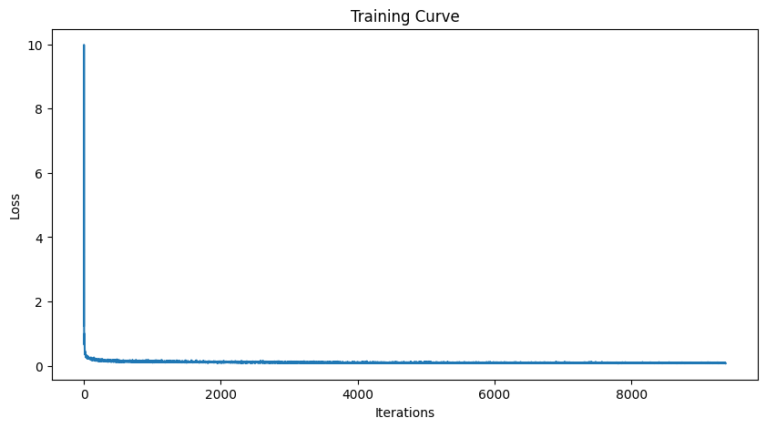
Figure 2.5: Training loss for class-conditioned UNet
I used classifier-free guidance with γ = 5.0 to improve sample quality:
ucfg = γuθ(xt, t, c) + (1-γ)uθ(xt, t, ∅)
I generated 4 instances of each digit (0-9)
Class conditioning dramatically improves the quality because it allows the model to learn separate, class-specific velocity fields. By providing the target digit class as a one-hot vector, the flow matching model can predict velocities that specifically guide the trajectory from noise toward the correct digit class in the data distribution. This transforms the single ambiguous velocity field into ten distinct, well-defined flows, one for each digit. The classifier-free guidance further strengthens this by computing a weighted combination of the conditional and unconditional velocity predictions, which steers the flow more directly toward the target class and away from the average of all classes.
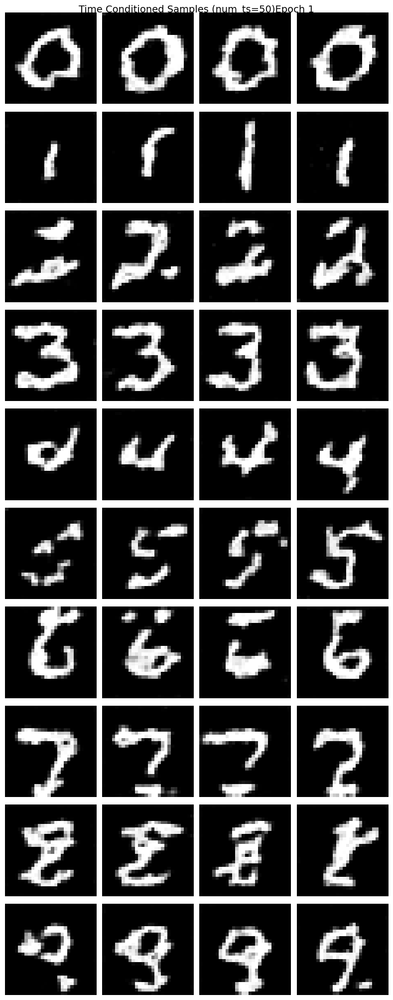
Figure 2.6a: Class-conditioned sampling after 1 epoch (4 instances per digit)
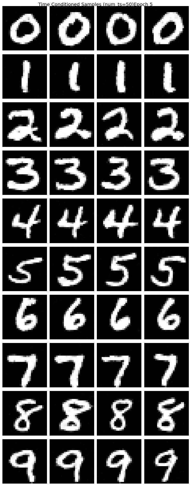
Figure 2.6b: Class-conditioned sampling after 5 epochs
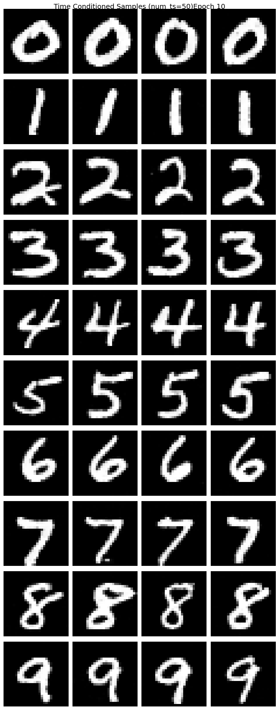
Figure 2.6c: Class-conditioned sampling after 10 epochs - high quality digits!
Approach: Just remove the learning rate schedule and keep the learning rate at 1e-2
Performance: Simply removing the learning rate schedule and keeping the learning rate at 1e-2 did not change the quality of the results that much. Performance is slightly worse, see how the digit '4' is fragmented in Epoch 5. Note: I decided to stop training after Epoch 5 for this since the training loss has already converged.
My Guess Why: Removing the learning rate scheduler leads to slightly worse performance because the model trains with a constant high learning rate of 1e-2 throughout all epochs. Early in training, this high learning rate helps the model quickly learn the overall structure of the velocity field and make rapid progress. However, later in training when the model needs to refine the learned flow to accurately predict velocities for smooth trajectories, the high learning rate causes the weights to overstep and oscillate rather than converging to a precise solution. This prevents the flow field from becoming as smooth and accurate as it would be with a decaying learning rate.
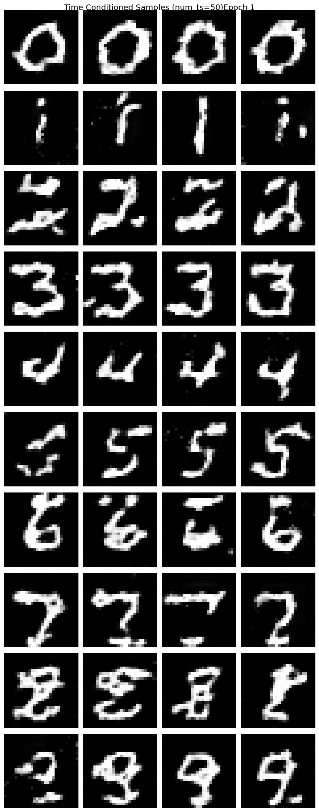
Figure 2.6d: Results without learning rate scheduler, Epoch 1
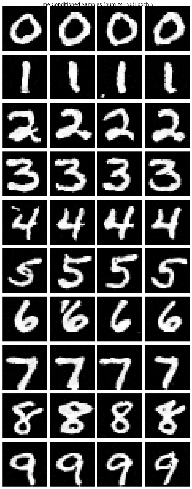
Figure 2.6e: Results without learning rate scheduler, Epoch 5
Approach: Remove learning rate scheduler and decrease learning rate to 1e-3
Performance:
My Guess Why:Using a smaller fixed learning rate of 1e-3 recovers most of the performance because it enables stable convergence throughout training without requiring a scheduler. While the model learns the velocity field more slowly in early epochs compared to starting at 1e-2, it avoids the instability and oscillations in later training that prevent the flow from being accurately refined. The final performance is similar because by the end of training with a scheduler, the learning rate would have decayed to around 1e-3 anyway, meaning both approaches ultimately train with similar step sizes during the critical later epochs where the flow field is being fine-tuned for accurate sampling.
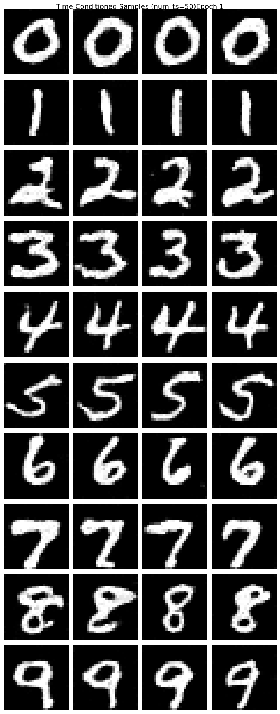
Figure 2.6f: Results without learning rate scheduler, with smaller learning rate lr=1e-3 Epoch 1
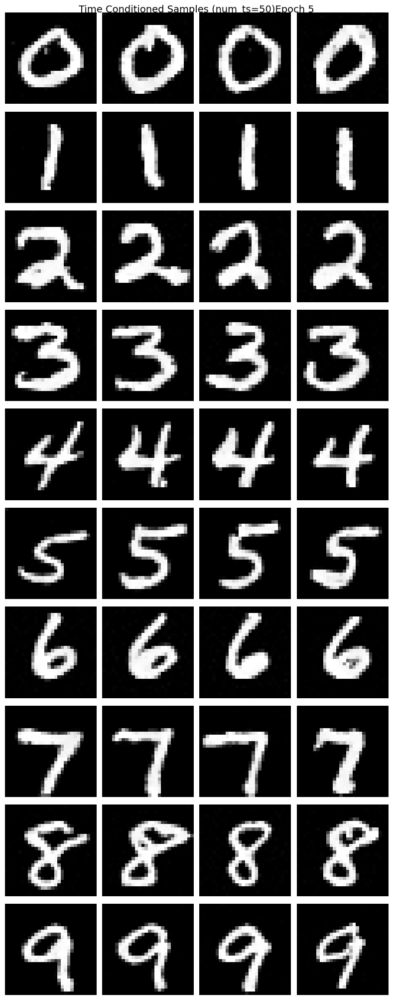
Figure 2.6g: Results without learning rate scheduler, with smaller learning rate lr=1e-3, Epoch 5